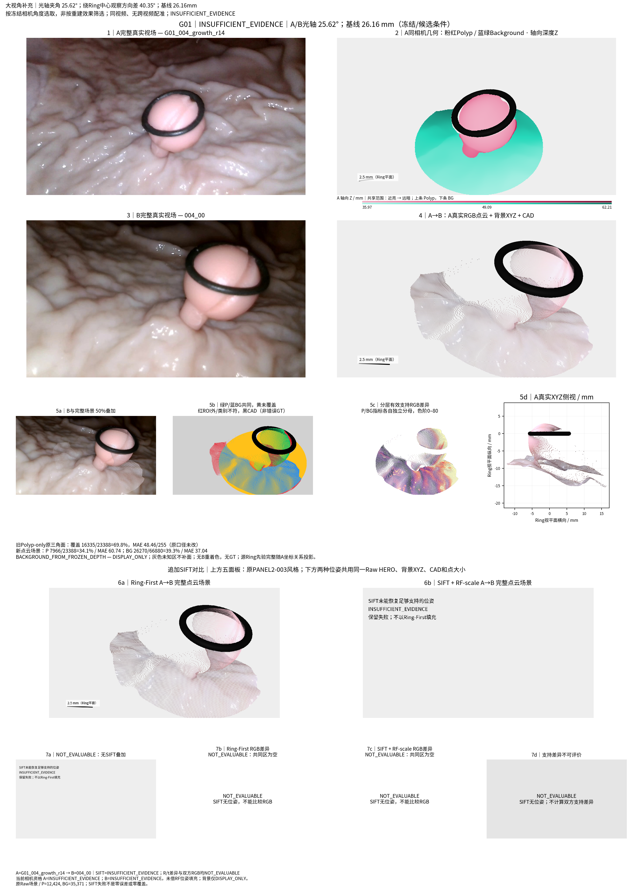
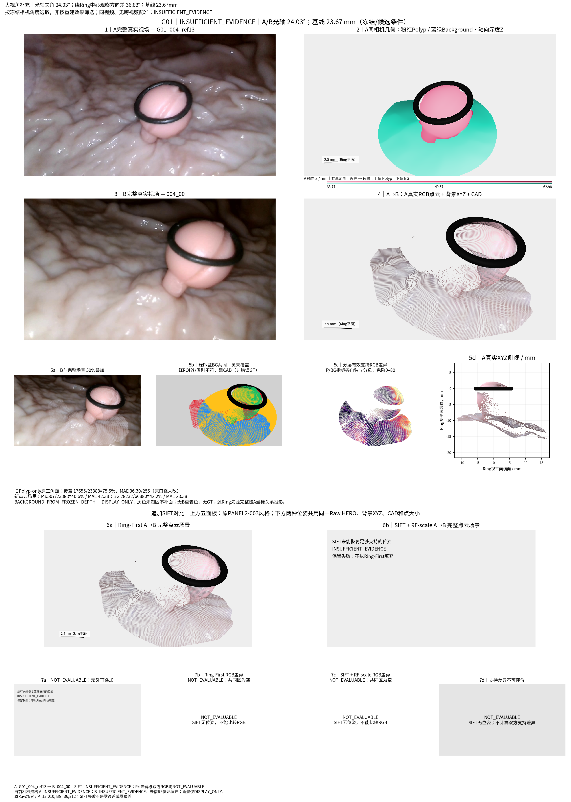
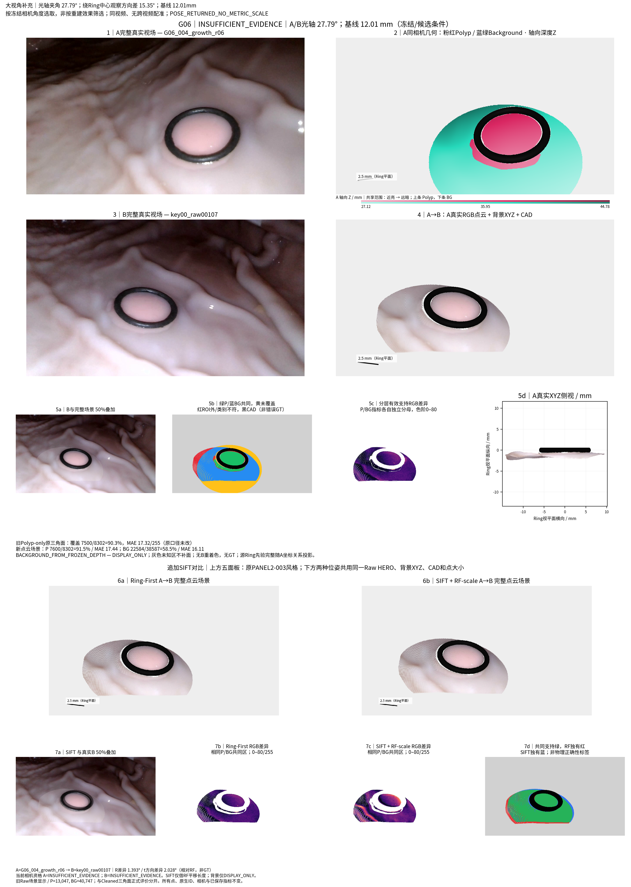
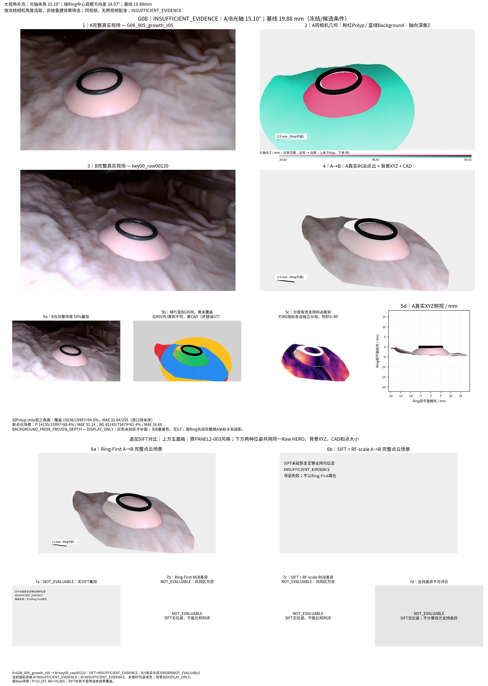

大视角 A→B，原Panel2方法 + SIFT
选择只依据冻结同视频相机的光轴夹角；另列绕Ring中心的观察方向差。G08最大可用光轴差15.1°，不冒称达到30°。旧帧对和指标保留。
覆盖率与轮廓误差说明
G01_004_growth_r14 → 004_00；光轴25.62° / 观察方向40.35°

G01_004_ref13 → 004_00；光轴24.03° / 观察方向36.83°

G06_004_growth_r06 → key00_raw00107；光轴27.79° / 观察方向15.35°

G08_005_growth_r05 → key00_raw00120；光轴15.10° / 观察方向24.97°
